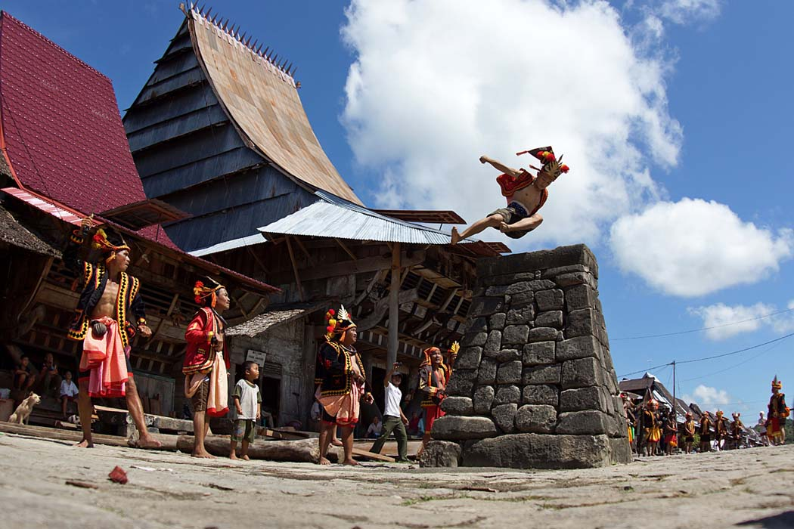

Suku Nias
Suku Nias adalah kelompok etnik yang berasal dari
Pulau Nias. Mereka menamakan diri mereka "Ono Niha" (Ono
berarti anak/keturunan; Niha = manusia) dan Pulau Nias sebagai
"Tanö Niha" (Tanö berarti tanah). Hukum adat tradisional
Nias secara umum disebut fondrakö. Masyarakat Nias
kuno hidup dalam budaya megalitik, dibuktikan oleh peninggalan
sejarah berupa ukiran pada batu-batu besar yang masih ditemukan di
wilayah pedalaman pulau ini sampai sekarang.

Asal-usul
Mitologi
Berbagai mitos dalam hoho menceritakan kedatangan suku Nias ke
pulau. Sebuah hoho mengatakan bahwa orang Nias berasal dari sebuah
pohon kehidupan yang disebut "Sigaru Tora'a" yang terletak di
sebuah tempat yang bernama Teteholi Ana'a. Kedatangan manusia
pertama ke Pulau Nias dimulai pada zaman Raja Sirao yang memiliki
9 putra yang disuruh keluar dari Teteholi Ana'a karena
memperebutkan Takhta Sirao. Ke-9 putra itulah yang dianggap
menjadi orang yang pertama sekali yang menginjakkan kaki di Pulau
Nias. Mitos lainnya, Inada Sirici menurunkan 6 orang anak ke Pulau
Nias dan menjadi leluhur. Masih terdapat beberapa versi lain
tentang kehadiran manusia di Nias.
Penelitian Arkeologi
Penelitian arkeologi telah dilakukan di Pulau Nias sejak tahun
1999. Penelitian ini menemukan Pulau Nias telah dihuni sejak
12.000 tahun yang lalu oleh imigran dari daratan Asia, bahkan ada
indikasi sejak 30.000 tahun lampau. Budaya Hoabinh di Vietnam yang
sama dengan budaya yang ada di Pulau Nias menimbulkan dugaan
imigrasi penduduk dari Vietnam.
Pada 2013, penelitian genetika oleh mahasiswa doktoral Departemen
Biologi Molekuler Forensik Erasmus MC menyimpulkan bahwa
masyarakat Nias berasal dari rumpun bangsa Austronesia. Mereka
diperkirakan datang dari Taiwan melalui jalur Filipina 4.000-5.000
tahun lalu.
Penelitian ini juga menemukan bahwa dalam genetika orang Nias saat
ini tidak ada lagi jejak dari masyarakat Nias kuno yang sisa
peninggalannya ditemukan di Gua Tögi Ndrawa. Penelitian arkeologi
terhadap alat-alat batu yang ditemukan menunjukkan bahwa manusia
yang menempati gua tersebut berasal dari masa 12.000 tahun lalu.
Ciri Fisik Khas Suku Nias
| Ciri Khas |
Deskripsi |
| Postur Tubuh |
Orang Nias umumnya memiliki postur tubuh yang sedang hingga
tinggi. Tinggi badan rata-rata mereka berkisar antara 155 cm
hingga 168 cm.
|
| Bentuk Wajah |
Wajah orang Nias cenderung berbentuk oval dengan rahang yang
cukup tegas, terutama pada pria.
|
| Warna Kulit |
Kulit orang Nias umumnya berwarna putih atau kuning langsat.
Sebagian juga memiliki kulit sawo matang seperti kebanyakan
orang Indonesia lainnya.
|
| Rambut |
Rambut orang Nias biasanya berwarna hitam dan cenderung tebal.
|
| Mata |
Salah satu ciri khas yang paling menonjol adalah bentuk mata
mereka yang cenderung sipit, meskipun tidak sesipit mata orang
Tionghoa
|
Sistem kekeluargaan
Suku Nias menerapkan sistem mado mengikuti garis ayah (patrilineal).
Mado-mado umumnya berasal dari kampung-kampung pemukiman yang ada.
Sebaran di Indonesia
Sebagian besar orang berada di Provinsi Sumatera Utara, tepatnya di
Pulau Nias. Pulau Nias terbagi menjadi lima wilayah administrasi,
yakni 4 kabupaten dan 1 kota. Jumlah orang Nias cukup signifikan di
Provinsi Riau. Tahun 2010, jumlah orang Nias di Indonesia sebanyak
1.041.925 jiwa (0,44%) dari 236.728.379 jiwa penduduk.
Berikut ini adalah sebaran orang Nias di Indonesia berdasarkan data
resmi pemerintah melalui Sensus Penduduk Indonesia 2010, menurut
provinsi:
| No |
Provinsi |
Jumlah 2010 |
% |
| 1 |
Sumatera Utara |
911.820 |
87,51% |
| 2 |
Riau |
71.537 |
6,87% |
| 3 |
Sumatera Barat |
18.239 |
1,75% |
| 4 |
Aceh |
9.366 |
0,90% |
| 5 |
Jawa Barat |
7.925 |
0,76% |
| 6 |
Kepulauan Riau |
4.676 |
0,45% |
| 7 |
DKI Jakarta |
4.572 |
0,44% |
| 8 |
Jambi |
3.574 |
0,34% |
| 9 |
Provinsi Lain |
10.217 |
0,98% |
|
Indonesia |
1.041.925 |
100% |
Bahasa
Dialek
Umumnya bahasa Nias dianggap memiliki tiga dialek. Dialek utara
dituturkan di daerah Gunungsitoli, Alasa dan Lahewa. Dialek selatan
dituturkan di Nias Selatan. Sementara itu, dialek tengah dituturkan
di Nias Barat, khususnya di daerah Sirombu dan Mandrehe. Sementara
itu, Proyek Penelitian Bahasa dan Sastra Indonesia dan Daerah
Sumatera Utara 1977/1978 membagi bahasa Nias ke lima dialek. Dialek
utara dituturkan di Alasa dan Lahewa; dialek Gunungsitoli; dialek
barat di Mandrehe, Sirombu, Kepulauan Hinako; dialek tengah di Gido,
Idano Gawo, Gomo, Lahusa; dan dialek selatan di Telukdalam, Pulau
Tello, dan Kepulauan Batu. Tingkat kemiripan antara dialek ini
mencapai 80%. Bahasa Nias juga sebagai bahasa resmi di Nias.
Alfabet
Abjad dalam bahasa Nias berbeda dengan abjad dalam bahasa Indonesia,
di mana ada yang dikurangi (tidak dipakai) dari abjad bahasa
Indonesia dan ada yang ditambahkan abjad unik (karakter khusus)
dalam bahasa Nias yang pengucapannya tidak terdapat di dalam abjad
bahasa Indonesia. Abjad Bahasa Nias huruf besar dan huruf kecil
sebagai berikut:
Aa, Bb, Dd, Ee, Ff, Gg, Hh, Ii, Kk, Ll, Mm, Nn, Oo, Öö, Rr, Ss, Tt,
Uu, Ww, Ŵŵ, Yy, Zz
Kosakata
Beberapa kosakata bahasa Nias dan terjemahannya dalam bahasa
Indonesia dapat dilihat di Daftar Swadesh bahasa Nias.
Agama
Sebagian besar orang Nias adalah pemeluk agama Kristen Protestan.
sedangkan yang lainnya beragama Islam, Katolik, Buddha dan Fanömba
adu. setidaknya menurut kenyataan sekitar tahun 1967. Sistem
kepercayaan yang disebut terakhir ini adalah nama yang diberikan
oleh pihak luar. yang merupakan sistem kepercayaan yang berasal dari
leluhur mereka. Mereka menyebut Molehe Adu, yaitu pemujaan roh
leluhur. Untuk itu mereka membuat patung-patung kayu (adu) yang
ditempati oleh roh leluhur.
Dalam sistem kepercayaan ini dikenal beberapa dewa. Yang terpenting
ada lah Lowalangi, yang dianggap raja segala dewa dari dunia atas
atau sang pencipta. Lature Danö adalah raja dewa-dewa dunia bawah da
saudara tua Lowalangi tadi. Silewe Nasarata adalah pelindung dari
para pemuka agama dan merupakan isteri dari Lowalangi; dan sumber
lain menyebutkan sebagai penghubung dewa dunia atas dan dewa dunia
bawah, serta sebagai penghubung antara kaum dewa dan umat manusia.
Sebenarnya bagi orang Nias Selatan nama Lowalangi, yang biasa di
sebut Lowalani, diperkenalkan oleh misionaris Jerman . Orang Nias
Selatan dulu mengenal nama Ida Samihara Luo sebagai pencipta dewa
dan manusia. Sang pencipta ini tidak mempunyai realitas, namun dari
padanya timbul dua anak kembar yang kemudian anak kembar ini kawin
dan mengembang biakkan dewa dan manusia
Budaya
Makanan
| Jenis Makanan |
Deskripsi |
| Gaolo |
Hasil parutan dari pada "ubi kayu" dan di aduk dengan tambahan
air bersih secukupnya, kemudian dimasak menggunakan periuk
secara sederhana, dan dimakan dengan cara mencelupkan ke air
cabe yang sudah disediakan.
|
| Gowi Nihandro; Gowi Nitutu |
Ubi tumbuk |
| Harinake |
Daging babi cincang dengan cacahan yang tipis dan kecil-kecil
|
| Godo-godo |
Ubi / singkong yang diparut, dibentuk bulat-bulat kemudian
direbus setelah matang di taburi dengan kelapa yang sudah di
parut
|
| Köfö-köfö |
Daging ikan yang dihancurkan, dibentuk bulat dan
dijemur/dikeringkan/diasap
|
| Ni'owuru |
Daging babi yang sengaja diasinkan agar bisa bertahan lama
|
| Rakigae |
Pisang goreng |
| Tamböyö |
Ketupat |
| Löma |
Beras ketan yang dimasak dengan menggunakan buku bambu |
| Gae nibogö |
Pisang bakar |
| Kazimone |
Makanan yang terbuat dari sagu |
| Wawayasö |
Nasi pulut |
| Gulo-Gulo Farö |
Manisan dari hasil sulingan santan kelapa |
| Bato |
Daging kepiting yang dipadatkan dalam bentuk bulat agar dapat
bertahan lama; terdapat di Kepulauan Hinako
|
| Nami |
Telur kepiting dapat berupa nami segar atau yang telah
diasinkan agar awet, dapat bertahan hingga berbulan-bulan
tergantung kadar garam yang ditambahkan
|
Peralatan Rumah Tangga
| Peralatan |
Deskripsi |
| Bowoa tanö |
Periuk dari tanah liat, alat masak tradisional |
| Figa |
Piring |
| Figa Lae |
Daun pisang yang dipakai untuk menjadi alas makanan Halu (alat
menumbuk padi) - dfsf
|
| Lösu |
Lesung |
| Gala |
Dari kayu seperti talam |
| Sole mbanio |
Tempat minum dari tempurung |
| Katidi |
Anyaman dari bambu |
| Niru |
Alat untuk menapik beras untuk memisahkan dedak |
| Haru |
Sendok nasi |
| Famofu |
Alat niup api untuk memasak |
| Fogao Banio |
Alat pemarut kelapa |
| Sendo |
Sendok |
| Tuhi-Tuhi |
Tungku Api Masak |
| Kawali |
Kuali |
Minuman
| Minuman |
Deskripsi |
| Tuo nifarö (tuak) |
Tuak adalah minuman yang berasal dari air sadapan pohon nira
(dalam bahasa Nias "Pohon Nira" = "töla nakhe") dan pohon
kelapa (dalam bahasa Nias "Pohon Kelapa" = "töla nohi" ) yang
telah diolah dengan cara penyulingan. Umumnya Tuo nifarö
mempunyai beberapa tingkatan (bisa sampai 3 (tiga) tingkatan
kadar alkohol). Dimana Tuo nifarö No. 1 bisa mencapai kadar
alkohol 43%.
|
| Tuo mbanua / Sataha |
Minuman tuak mentah yang berasal dari air sadapan pohon kelapa
atau pohon nira yang telah diberi 'laru' berupa akar-akar
tumbuhan tertentu untuk memberikan kadar alkohol
|
Acara Tradisional Nias
- Tome, Dome : Tamu Undangan
- Sowatö : Tuan Rumah
- Fahombo [11] (Lompat Batu)
- Fataele/Foluaya] (Tari Perang)
- Maena (Tari berkelompok)
- Tari Moyo (Tari Elang)
- Fangowai (Tari sekapur sirih/penyambutan tamu)
- Fame Ono nihalö (Pernikahan)
- Faelöwa : Acara Pernikahan
- Mangowalu : Menikah
- Manunö : Bernyanyi
- Marafule : Pengantin Laki-Laki
- Ono Nihalö : Pengantin Perempuan
- Ama Matua : Bapak Mertua
- Ina Matua : Ibu Mertua
- Sibaya : Paman
- Omo Hada : Rumah Adat
-
Fame'e Töi Nono Nihalö (Pemberian nama bagi perempuan yang sudah
menikah)
-
Fasösö Lewuö (Menggunakan adu bambu untuk menguji kekuatan pemuda
Nias)